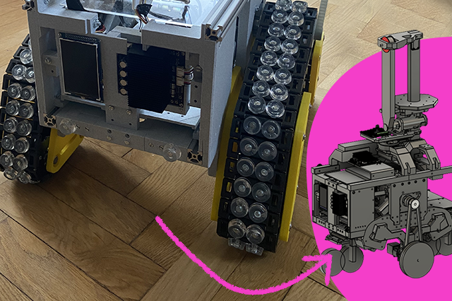
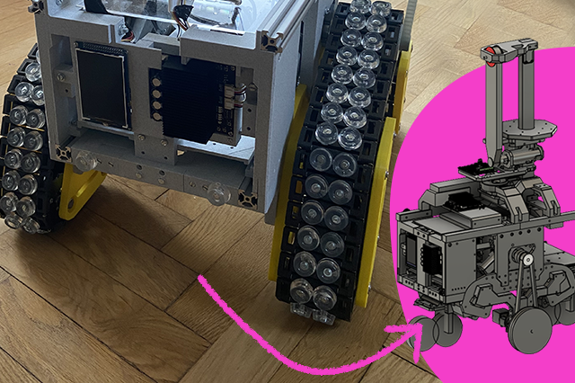

Hi,
I am Carl
Data Scientist
liljedahlcarl@gmail.com
About

Passion for Data-Driven Innovation
With over four years as a Data Scientist, I'm passionate about transforming data into actionable insights. My experience spans various sectors,
from deploying revenue-boosting machine learning models in the loan brokerage industry to tackling complex data warehousing and analytics challenges.
Recently, I decided to pursue a project I have been working on, while simultaneously realizing my Master's thesis.
I am very passionate about this project where I designed, built and developed a robot that I will be introducing at the end of this website.
I'm on track to obtain my Civil Engineering degree from KTH Royal Institute of Technology in Computer Science around the turn of the year and am now seeking an employer where I can continue to grow.
Keep scrolling to explore my professional skills or see my robot in action!
Skills
Some of my technical skills
While my education and work experience have given me a solid grounding in various programming languages and technologies - I am committed to ongoing learning,
eager to expand my skills, keep learning and explore. Here are a few core tools and techniques I frequently rely on to turn ideas into action.
 About the Employer
About the Employer
 Python
Python
 SQL
SQL
 Visualize for insights
Visualize for insights
Robot doing dishes
A Data-Driven Approach to Robotics
This project began as a personal endeavor to explore robotics through practical, hands-on experimentation - being fascinated by the idea of implementing algorithms on a physical robot and
seeing them in action. Today, the robot has grown to over 1 cubic meter in size and can autonomously map and navigate environments. Recent updates
include machine learning-driven object recognition and path optimization.
I have designed, 3D-printed all components, aswell as developed the software with the ultimate goal of creating a robot that can pick up dishes and load them into
the dishwasher using a vertical lift system. This feature is currently under developement, but tests of the vertical elevator is showcased at the end of this website.
Real-Time Pathfinding with Particle Swarm

Optimized Navigation Using Dynamic Window Approach
This demonstration showcases the robot's navigation using real-time velocity generation, powered by a Dynamic Window Approach (DWA). The particle swarm of green arrows represents potential paths the robot could take, with each velocity vector evaluated based on proximity to obstacles, alignment with the global target, and overall efficiency. The optimal vector is selected dynamically to ensure safe and effective navigation. This approach has direct applications in autonomous vehicles, warehouse automation, and more, made possible using a global/local planner combination where the local planner utilizes this DWA to avoid not previously seen obstacles and continously calculating new velocities within a dynamic window.

 Illustration demonstrating how the LiDAR data is used with SLAM (Simultaneous Localization and Mapping) to create a 2D map, which is later ultilized using deep learning for optimized pathfinding.
Illustration demonstrating how the LiDAR data is used with SLAM (Simultaneous Localization and Mapping) to create a 2D map, which is later ultilized using deep learning for optimized pathfinding.

 The robot initially ran on tracks, but due to irregular sensor outputs caused by track vibrations, it was converted to wheels with suspension for smoother operation.

The robot initially ran on tracks, but due to irregular sensor outputs caused by track vibrations, it was converted to wheels with suspension for smoother operation.
